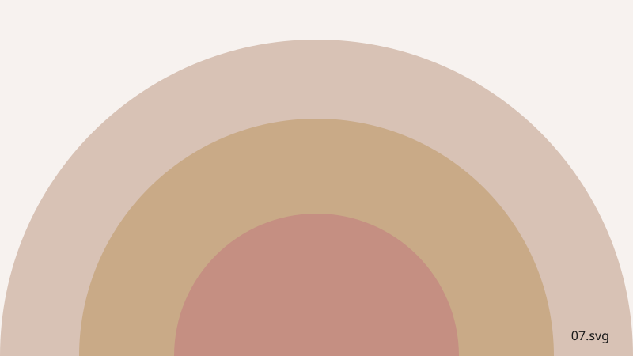

Silhouettes
Large-format works on photographic paper, each built around the silhouette of a human figure set against the Umbrian landscape. Printed and mounted by hand in the studio.

Figure at Dawn
Photographic paper, large format, 2024. A silhouette against first light over the valley.

Standing Figure
Photographic paper, large format, 2023. A single figure on the terrace edge.

Two Figures
Photographic paper, large format, 2022. Two silhouettes facing the hillside.

Walking
Photographic paper, large format, 2024. A figure mid-stride on a stone path.

Seated Figure
Photographic paper, large format, 2021. A quiet moment on the studio steps.

Field Line
Photographic paper, large format, 2023. A row of figures along the field edge.